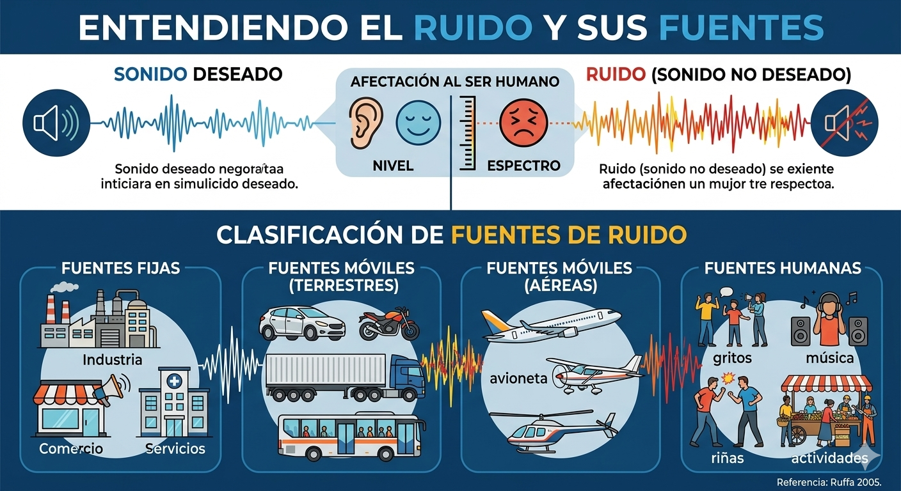

Ruido y sus fuentes

El término Ruido es entendido como un sonido no deseado. El ruido es una mezcla de vibraciones diferentes, que generalmente producen una sensación desagradable. Al respecto puede establecerse que, según el comportamiento del oído, la interpretación no estaría enfocada a la definición de sonido o ruido, sino simplemente a la identificación de su nivel, espectro y su afectación al ser humano. (Adoptado, Ruffa, 2005). Las fuentes pueden ser fijas (Industria, comercio y servicios), Móviles (Autos, motos, camiones, transporte público), aviones, avionetas, Helicópteros) y humanos (gritos, música, riñas, actividades).
Actividad: Escucha e identifica si es sonido o ruido